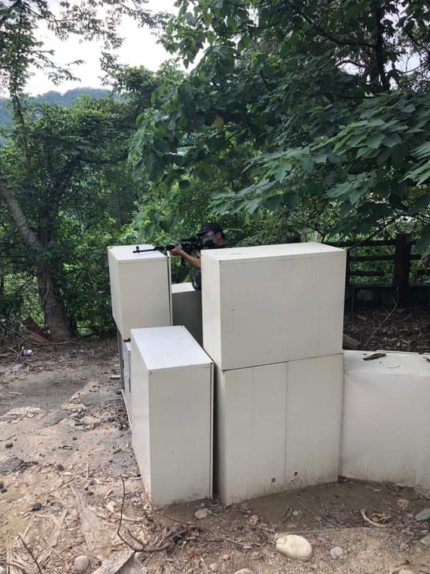
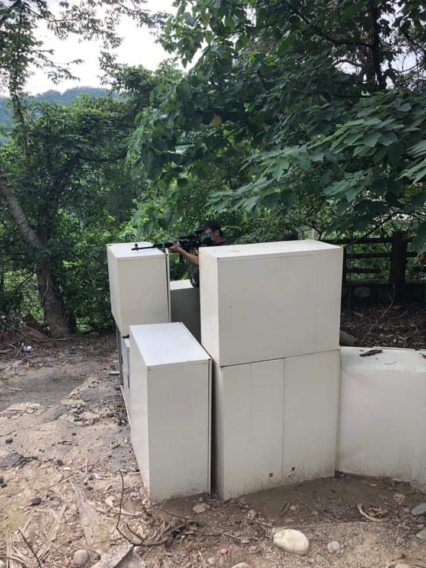

About Me

- An ordinary university student
- Airsof＆firearm enthusiast
- Spiritual Texan
- Scocial media shitposter
- Deadline provocateur
- Not so ordinary after all?
ClickHEREfor updated content(final project)點擊左邊"HERE"開啟期末更新部分

Airsoft (AKA. survival game) is a team game in which participants(Airsofters) eliminate opposing players by tagging them out of play with spherical plastic projectiles(BB pellet) shot with mock air weapons called airsoft guns(replicas). Various game modes in shooter videogames like flag, hostage, bomb can also be played in reality with Airsoft.
Across Japan, South East Asia, North America and Europe there are hundreds of thousands of Airsofters who put on their combat gear, heave on their webbing and grab their rifles each weekend.
Airsoft originated in Japan in the early 1980′s as the Japanese answer to the American craze of Paintball.
In my research, Japanese has stricter laws restricted them from owning a real gun or even paintball gun,that's one of the reason they developed Airsoft,
to have better performance using low kinetic energy that didn't surpass the legal limit.
Over the years, Airsoft has advanced in both technologies and as a sport, granting higher performance and more realistic cycling guns,
allowed for greater realism and gameplay experience.
Taiwan is also a major player in the Airsoft market, with less law restriction and more flexibility, Many past toy manufacturers adapted the Japanese airsoft system and improved upon their performance,
using more realistic materials, and developed unique features, becoming one of our big exporting products,
I think this is a great example of Industrial transformation.(sort of?)

You can buy Airsoft equipments& supply at local survival game stores or even online
In Taiwan theres many local arenas set up by the Airsoft enthusiasts and game store owners alike.
You'll find at least 3~4 arenas in every counties/cities, and it usually will cost you less than 300NT$ for entering a day of gameplay (Bring your own equipment)
BTW, Playing Airsoft in private land or backyard plinking is doable, but Airsofters should make sure about the safety and don't disturb the locals.
We called Airsoft guns "replicas",there by most Classifications of real firearms (EX:rifle,pistol, machine gun) were replicated into Airsoft,
but the big difference is the various types of Airsoft replicas that functions differently, here's some popular example：
The simplest & oldest way an Airsoft replica functions: manually compressd spring drives the piston forward,squeezing air that shoots out the BB.
This is usually how most cheap toystore BB guns works, but many sinper rifle replicas also use this system as it's the most stable.

Often called AEG, using motor and gears to drive the spring& piston instead of manually compressing it,
this was regarded as the most efficient system as AEG replicas can have high rate of fire(up to 20+ rounds per second) and high ammo capacity(up to thousand of BBs).

Often called GBB,a more using gasified propane to shoot out the BB, while some of the gas went backward and cycles the action (bolt),
giving a nice kickback every shot, coupled with limited ammo capacity& realistic internals it's regard as the more realistic Airsoft option.
Other power source like co2 cartridge, HPA air tank, gunpowder caps were also used,
but because of their danger nature or unfair advantages, they were banned in some Airsoft games.
My first Airsoft game was at 寶島陣地(AKA.BDman) in Dakeng,Taichung city, carrying a bag of guns and hop on the bus for half an hour.
 

It's the first time I join talking with a group of Airsofters, and some of them are interested about my custom painted/modified guns.
In the games,I managed to score my first hit with my sniper rifle, and a second one with a SMG,while being tagged four times since I was just a noob.
The game was trillingly fun,and hit by Airsoft BB is not that painful,the more painful one was being bitten by multiple bugs and mosqquitoe,
Smearing some insect repellent is definitely necessary. But overall,it's still a fun activity that I'll keep joining.